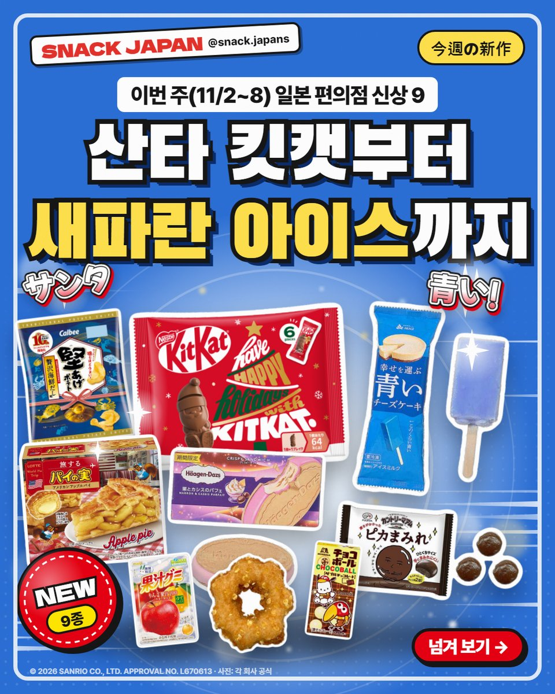
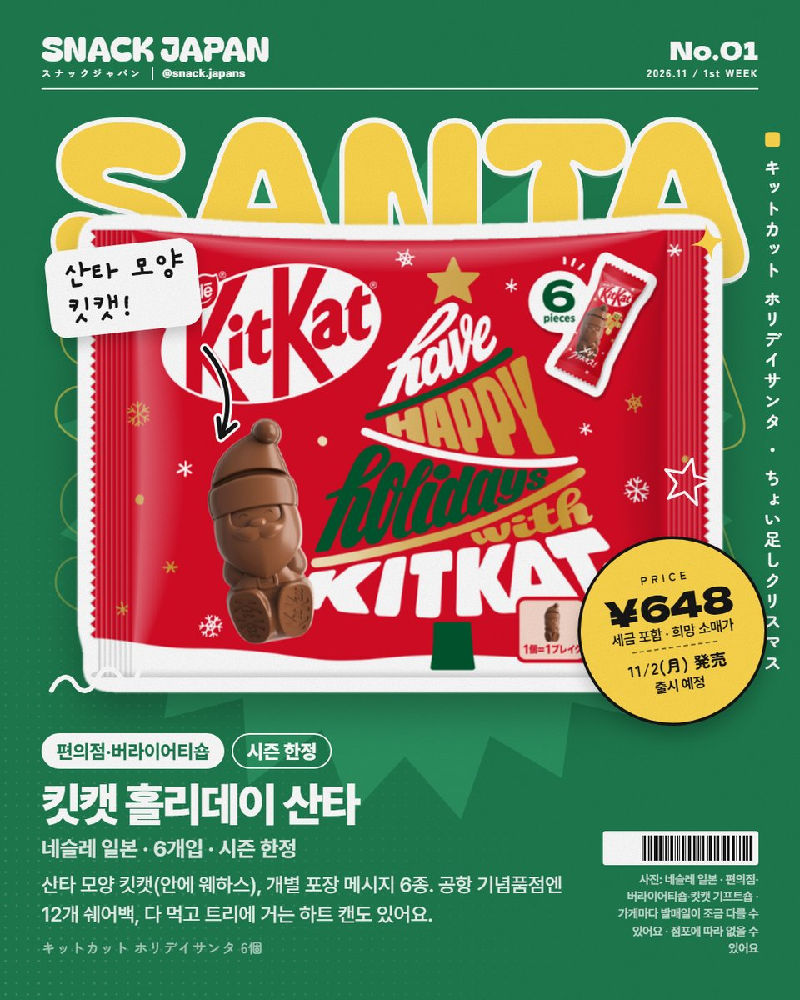
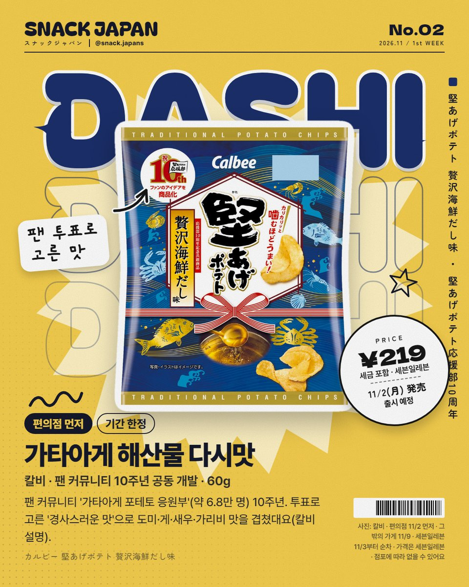
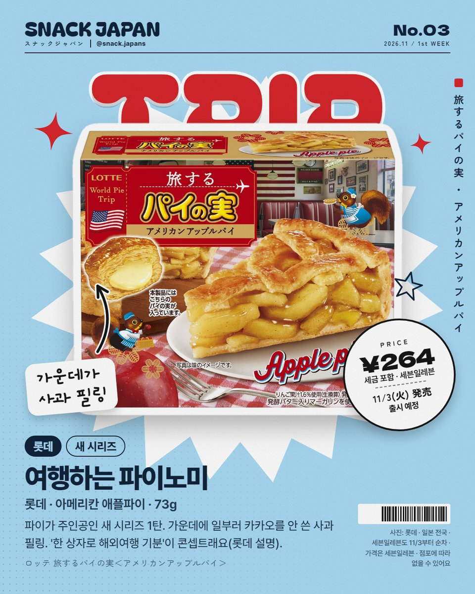
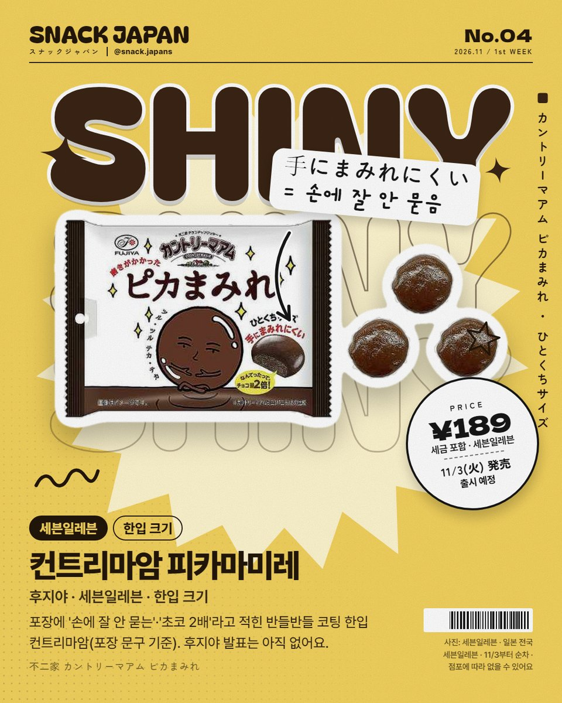
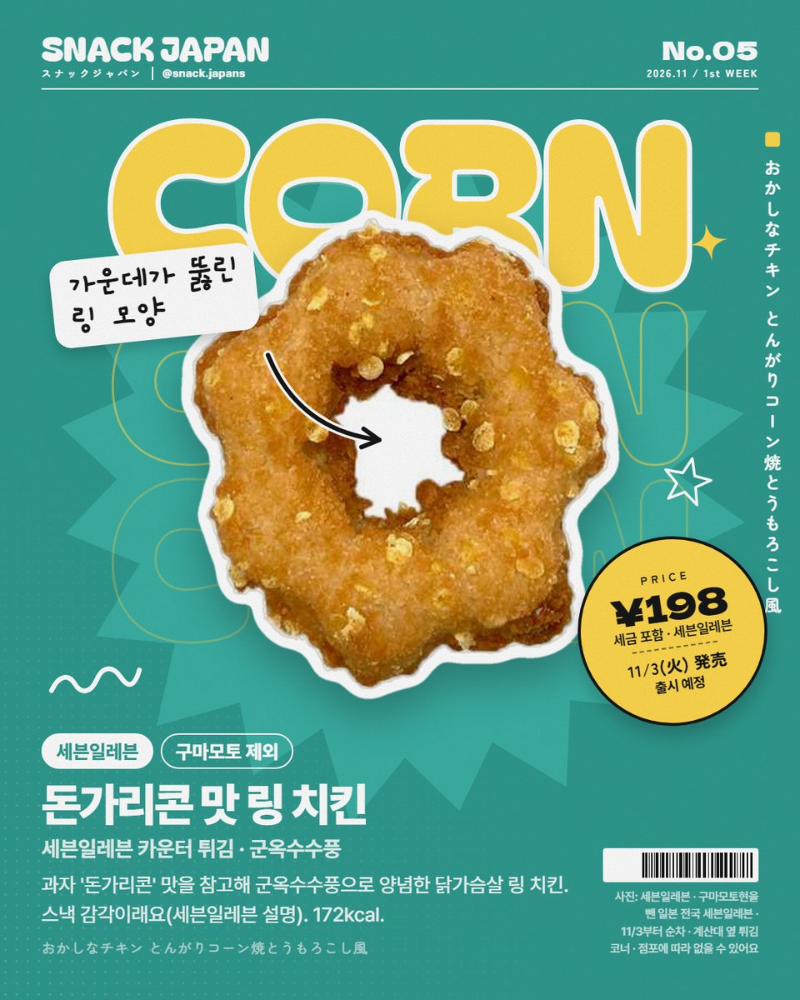
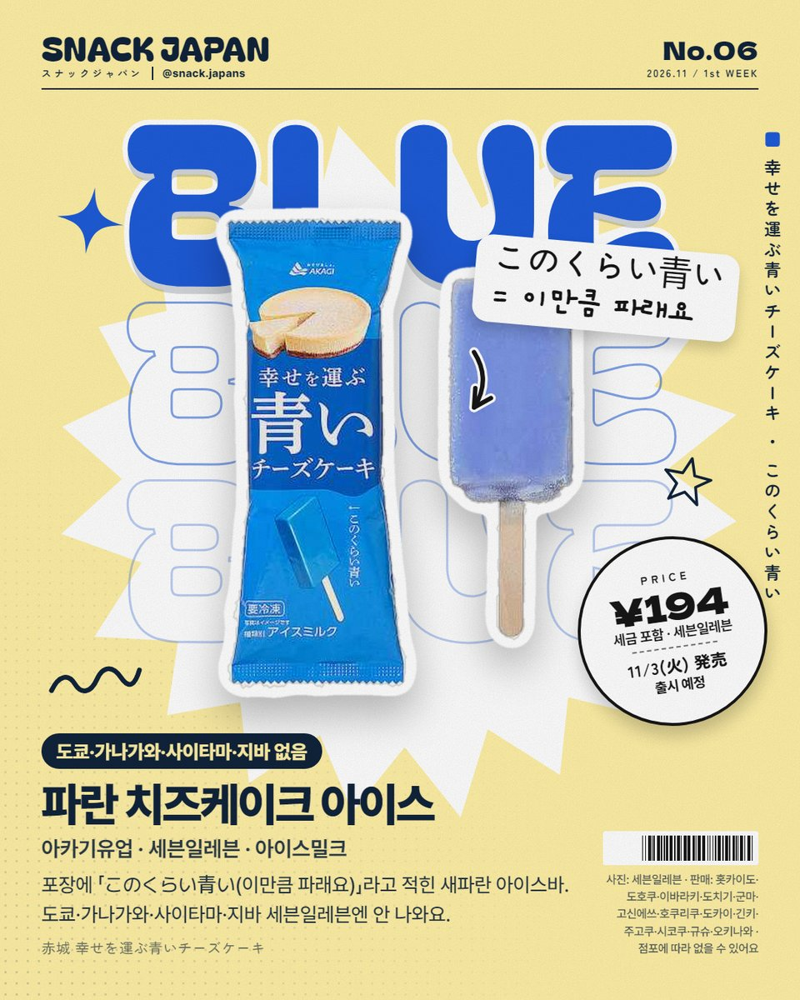
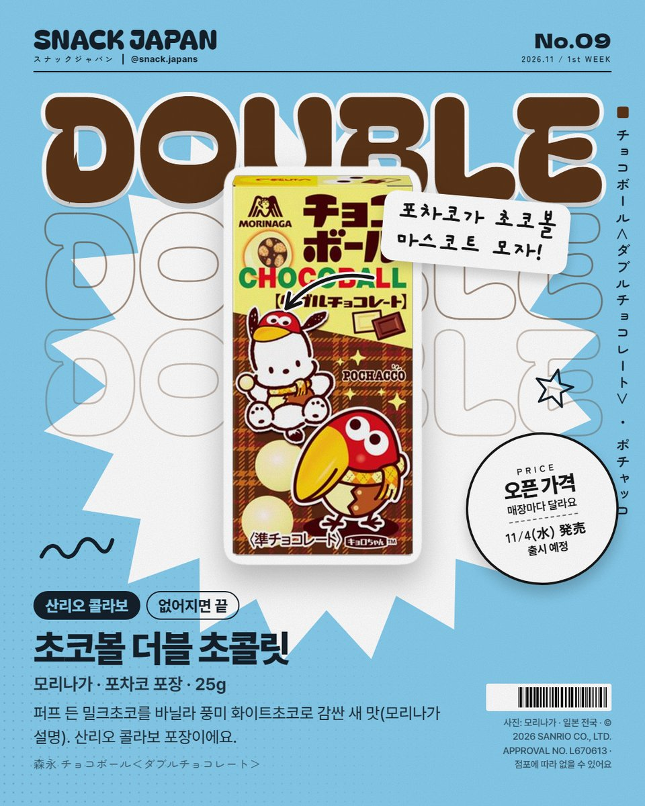
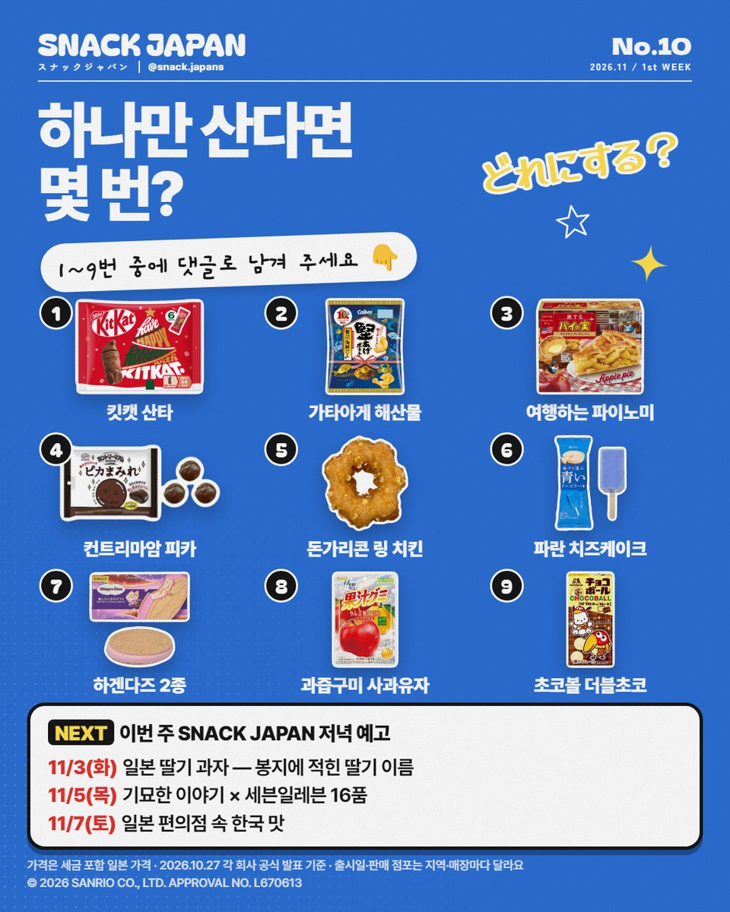

11월 첫째 주 일본 편의점 신상 9가지, 산타 킷캣부터 새파란 치즈케이크 아이스까지
11/2~8에 나오는 일본 편의점·과자 신상 미리 보기! 산타 모양 킷캣, 팬 투표로 고른 감자칩, 도쿄에선 못 사는 새파란 아이스까지 9가지예요.
11월 첫째 주 일본 편의점 신상, 미리 봤어요! 🎅
11/2(월)부터 11/8(일)까지
산타 모양 킷캣에 새파란 치즈케이크 아이스,
포차코가 그려진 초코볼까지 나와요 🍫
9가지, 날짜순으로 하나씩 정리해 볼게요!


1. 킷캣 홀리데이 산타 (네슬레 일본)
산타 모양 킷캣이에요. 안에는 웨하스!
개별 포장에는 '메리 크리스마스!' 같은 메시지가 6종 적혀 있어요.
- 출시: 11월 2일(월)
- 파는 곳: 편의점·버라이어티숍·킷캣 기프트숍 (가게마다 발매일이 조금 다를 수 있어요)
- 공항 기념품점에는 12개 든 쉐어백도 있어요
- 다 먹고 트리에 거는 하트 오너먼트 캔(3개입)도 나와요
- 일본 이름: キットカット ホリデイサンタ 6個

2. 가타아게 포테토 호화 해산물 다시맛 (칼비)
팬 커뮤니티 '가타아게 포테토 응원부'(약 6.8만 명)가 생긴 지 10주년!
투표로 고른 '10주년에 어울리는 경사스러운 맛'으로
도미·게·새우·가리비 감칠맛을 겹쳤대요 (칼비 설명).
- 출시: 편의점 11월 2일(월) 먼저, 그 밖의 가게 11월 9일(월)
- 세븐일레븐은 11월 3일(화)부터 순차
- 기간 한정, 60g
- 일본 이름: 堅あげポテト 贅沢海鮮だし味

3. 여행하는 파이노미 아메리칸 애플파이 (롯데)
파이노미에서 '파이가 주인공'인 새 시리즈 1탄이에요.
가운데에 일부러 카카오를 안 쓴 사과 필링을 넣었대요.
'한 상자로 해외여행 기분'이 콘셉트래요 (롯데 설명).
- 출시: 11월 3일(화), 일본 전국
- 73g
- 일본 이름: 旅するパイの実＜アメリカンアップルパイ＞

4. 컨트리마암 피카마미레 (후지야 · 세븐일레븐)
포장에 '손에 잘 안 묻는(手にまみれにくい)', '초코 2배'라고 적힌
반들반들 코팅 한입 컨트리마암이에요 (포장 문구 기준).
후지야 공식 발표는 아직 없어요.
- 출시: 11월 3일(화)부터 순차, 일본 전국 세븐일레븐
- 일본 이름: カントリーマアム ピカまみれ

5. 돈가리콘 맛 링 치킨 (세븐일레븐)
과자 '돈가리콘' 맛을 참고해 군옥수수풍으로 양념한
닭가슴살 링 모양 프라이드치킨이에요. 스낵 감각이래요 (세븐일레븐 설명).
- 출시: 11월 3일(화)부터 순차
- 파는 곳: 구마모토현을 뺀 일본 전국 세븐일레븐 (계산대 옆 튀김 코너)
- 172kcal
- 일본 이름: おかしなチキン とんがりコーン焼とうもろこし風

6. 행복을 나르는 파란 치즈케이크 아이스 (아카기유업 · 세븐일레븐)
포장에 「このくらい青い(이만큼 파래요)」라고 적힌 새파란 아이스바예요.
맛 설명은 공식 자료에 없어요.
- 출시: 11월 3일(화)부터 순차
- ⚠️ 도쿄·가나가와·사이타마·지바 세븐일레븐엔 안 나와요
- 파는 곳: 홋카이도·도호쿠·이바라키·도치기·군마·고신에쓰·호쿠리쿠·도카이·긴키·주고쿠·시코쿠·규슈·오키나와
- 일본 이름: 赤城 幸せを運ぶ青いチーズケーキ
7. 하겐다즈 기간 한정 2종 (하겐다즈 재팬)
- 크리스피 샌드 '밤과 카시스 파르페': 밤 소스를 넣은 밀크 아이스를 카시스 코팅으로 감싸 웨하스로 샌드 (하겐다즈 설명), 알코올 0.1%
- 바 '산딸기 가토쇼콜라': 초코 아이스 속에 초코 케이크와 산딸기 소스, 비터 초코 코팅 (하겐다즈 설명), 알코올 0.1% 미만
- 출시: 11월 3일(화), 일본 전국 슈퍼·편의점·백화점 등
- 일본 이름: クリスピーサンド『栗とカシスのパフェ』 / バー『木苺のガトーショコラ』
8. 과즙구미 사과유자 믹스 (메이지)
사과의 단맛에 유자 향을 더한 겨울 맛이래요 (메이지 설명).
- 출시: 11월 3일(화), 일본 전국, 기간 한정
- 사과 과즙 100%(생과즙 환산), 유자 과즙 1.3%, 착색료 무사용, 47g
- 일본 이름: 果汁グミりんごゆずミックス

9. 초코볼 더블 초콜릿 (모리나가)
퍼프 든 밀크초코를 바닐라 풍미 화이트초코로 감싼 새 맛이에요 (모리나가 설명).
산리오 콜라보 포장으로, 포차코가 초코볼 마스코트 '쿄로짱' 모자를 썼어요.
- 출시: 11월 4일(수), 일본 전국 (없어지면 끝)
- 25g
- 일본 이름: チョコボール＜ダブルチョコレート＞

10. SNACK JAPAN 저녁 예고
- 11/3(화): 일본 딸기 과자 — 봉지에 적힌 딸기 이름
- 11/5(목): 기묘한 이야기 × 세븐일레븐 16품
- 11/7(토): 일본 편의점 속 한국 맛
총평
- 가격: 사진 카드에 정리해 뒀어요
- 기준: 10월 27일 각 회사 공식 발표
- 참고: 출시일·판매 점포는 지역·매장마다 달라요. 세븐일레븐은 대부분 11월 3일부터 순차예요
- 추천: 11월 초에 일본 여행 가는 분, 편의점 신상 코너부터 도는 분
9개 중에 하나만 산다면 몇 번이에요? 🛒
사진 표기: © 2026 SANRIO CO., LTD. APPROVAL NO. L670613